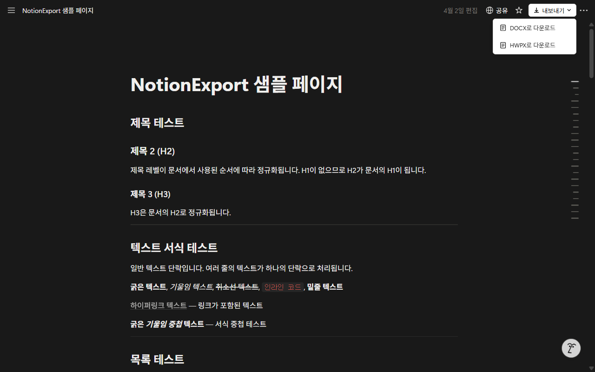
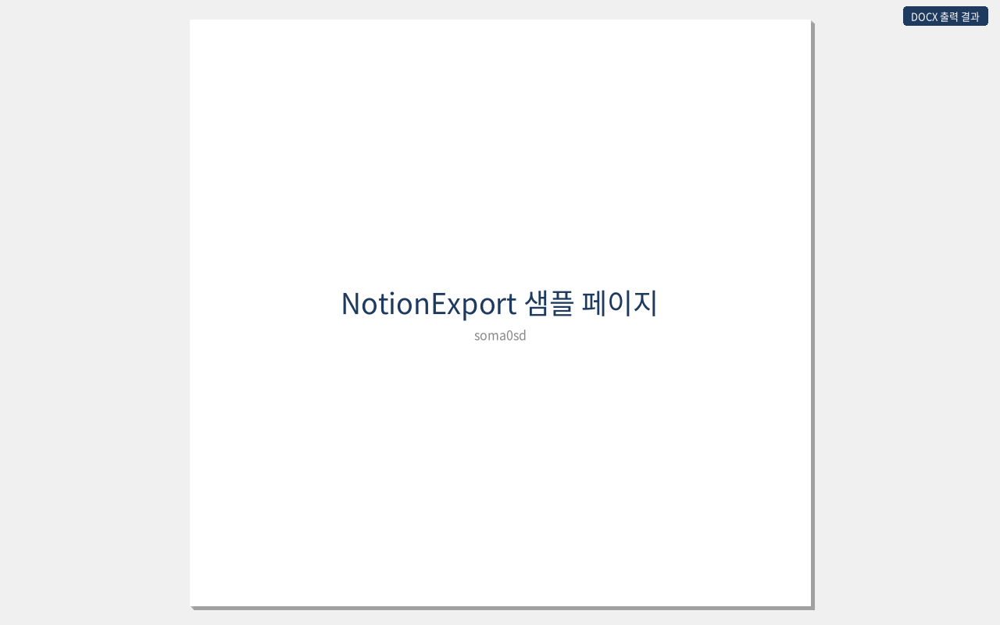
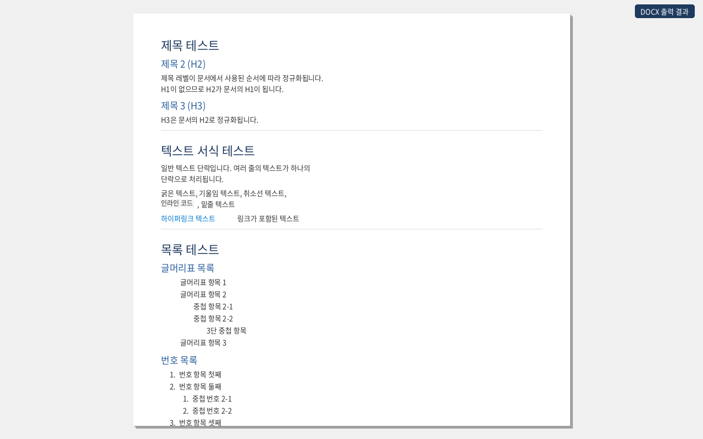
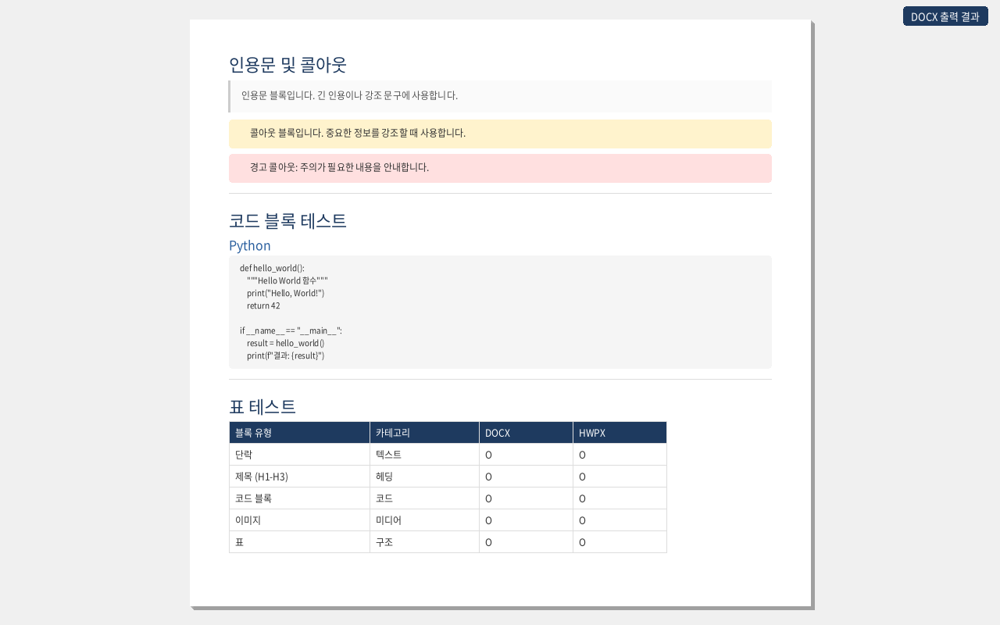

1. 설치
Chromium 계열 브라우저 세 곳에 같은 패키지로 등록되어 있습니다. 사용 중인 브라우저의 스토어에서 설치하십시오.
- Chrome 웹 스토어 - Google Chrome
- Microsoft Edge 애드온 - Microsoft Edge
- 웨일 스토어 - 네이버 웨일
설치 후 별도의 로그인이나 계정 연결은 필요하지 않습니다. 브라우저에 이미 로그인된 Notion 세션을 그대로 사용합니다.
1. Install
The same package is published to three Chromium-based browser stores. Install from the store for the browser you use.
- Chrome Web Store - Google Chrome
- Microsoft Edge Add-ons - Microsoft Edge
- Whale Store - Naver Whale
No sign-in or account linking is required. The extension reuses the Notion session already open in your browser.
2. 빠른 시작
- Notion 페이지를 엽니다.
app.notion.com과 기존www.notion.so주소를 모두 지원합니다. - 페이지 상단 바 오른쪽에 추가된 내보내기 버튼을 누릅니다.
- 드롭다운에서 DOCX로 다운로드 또는 HWPX로 다운로드 를 선택합니다.
- 진행 알림이 끝나면 브라우저 다운로드 폴더에 파일이 저장됩니다.

- 파일 이름은 페이지 제목을 그대로 사용합니다. 파일 이름에 쓸 수 없는 문자는
_로 바뀝니다. - 이미지가 많은 페이지는 변환에 수십 초가 걸릴 수 있습니다. 알림이 사라질 때까지 페이지를 닫지 마십시오.
- 현재 열려 있는 페이지 한 건만 변환합니다. 하위 페이지는 각각 따로 내보내야 합니다.
2. Quick start
- Open a Notion page. Both
app.notion.comand the legacywww.notion.soaddress are supported. - Click the Export button added to the right of the page top bar.
- Choose Download as DOCX or Download as HWPX from the dropdown.
- When the progress toast finishes, the file is saved to your browser's download folder.
- The file is named after the page title. Characters that cannot appear in a filename become
_. - Pages with many images can take tens of seconds. Keep the page open until the toast disappears.
- Only the page currently open is converted. Sub-pages must be exported one by one.
3. 출력 문서 구성
내보낸 문서는 표지 → 목차 → 본문 세 부분으로 만들어집니다. 용지는 A4(210 × 297 mm) 기준입니다.



제목 수준 자동 정규화
페이지에서 실제로 사용된 제목 중 가장 높은 수준을 문서의 제목 1로 재배치합니다. 제목 1 없이 제목 2와 제목 3만 쓴 페이지라면 제목 2가 문서의 제목 1이 되고 제목 3이 제목 2가 됩니다. 목차가 한 단계씩 밀려 들어가는 것을 막기 위한 처리입니다.
목차
DOCX 는 Word 의 목차 필드로, HWPX 는 한글 목차 형식으로 넣습니다.
F9 를 눌러 필드를 갱신하십시오. Word 는 문서를 열 때 필드를 자동으로 계산하지 않습니다.3. What the document looks like
An exported document is assembled in three parts: cover page → table of contents → body, on A4 paper (210 × 297 mm).
Heading normalization
The highest heading level actually used on the page becomes Heading 1 in the document. On a page that uses only Heading 2 and Heading 3, Heading 2 becomes Heading 1 and Heading 3 becomes Heading 2. This keeps the table of contents from starting one level too deep.
Table of contents
DOCX uses a Word TOC field; HWPX uses the Hangul table-of-contents format.
F9 to update the field. Word does not evaluate fields automatically when a document is opened.4. 설정 (옵션 페이지)
출력 서식은 확장의 옵션 페이지에서 지정합니다. 설정은 브라우저 로컬 저장소에 보관되며 내보내기 때 자동으로 적용됩니다.
옵션 페이지 여는 방법
- 브라우저 툴바의 확장 아이콘을 우클릭 → 옵션
- 또는 확장 관리 화면(
chrome://extensions,edge://extensions,whale://extensions)에서 이 확장의 세부정보 → 확장 프로그램 옵션
글꼴과 색상
여덟 개 항목에 글꼴과 글자색을 각각 지정합니다.
| 항목 | 적용 대상 |
|---|---|
| 전체 | 아래 항목에서 따로 지정하지 않은 모든 문단 |
| 제목 1 / 2 / 3 | 정규화된 뒤의 제목 수준 |
| 본문 | 일반 문단, 목록, 표 안의 글 |
| 인용 | 인용문 블록 |
| 코드 | 코드 블록과 인라인 코드 (기본값 Courier New) |
| 캡션 | 이미지 설명 등 보조 문구 |
- 글꼴 이름은 직접 입력하거나, 입력란을 눌러 시스템에 설치된 글꼴 목록에서 고를 수 있습니다. 목록을 읽으려면 브라우저의 로컬 글꼴 접근 권한을 한 번 허용해야 합니다.
- 색상을 비워 두면 변환기 기본값을 씁니다.
- 문서를 열 컴퓨터에 없는 글꼴을 지정하면 그 컴퓨터의 대체 글꼴로 표시됩니다.
표지 디자이너
- 표지 이미지를 올리면 최대 너비 1200픽셀 JPEG 로 자동 축소해 저장합니다.
- 텍스트 요소를 추가하고 미리보기 위에서 끌어 옮기거나 크기를 조절합니다. 스타일은 제목 · 부제 · 제목1~3 · 본문 · 캡션 일곱 가지입니다.
- 페이지 제목과 작성자는 자동으로 채우는 슬롯이 따로 있으며, 각각 사용 여부를 켜고 끌 수 있습니다.
- 미리보기는 A4 비율 기준이며, 여기서 잡은 위치가 DOCX 와 HWPX 에 같은 좌표로 반영됩니다.
4. Settings (options page)
Output formatting is configured on the extension's options page. Settings are stored in local browser storage and applied automatically on every export.
Opening the options page
- Right-click the extension icon in the browser toolbar → Options
- Or open the extensions page (
chrome://extensions,edge://extensions,whale://extensions) and choose Details → Extension options
Fonts and colors
A font and a text color can be set for each of eight slots.
| Slot | Applies to |
|---|---|
| Global | Every paragraph not covered by a more specific slot |
| Heading 1 / 2 / 3 | Heading levels after normalization |
| Body | Paragraphs, lists, and text inside tables |
| Quote | Quote blocks |
| Code | Code blocks and inline code (defaults to Courier New) |
| Caption | Image captions and other secondary text |
- Type a font name directly, or click the field to pick from the fonts installed on your system. Reading that list requires granting local font access once.
- Leave a color empty to use the converter default.
- A font that is not installed on the machine opening the document is substituted by that machine.
Cover page designer
- An uploaded cover image is resized to a JPEG of at most 1200 pixels wide before it is stored.
- Add text elements and drag or resize them on the preview. Seven styles are available: title, subtitle, heading 1-3, body, and caption.
- Separate slots fill in the page title and author automatically; each can be turned on or off.
- The preview uses A4 proportions, and the positions set there map to the same coordinates in both DOCX and HWPX.
5. 변환 지원 블록
| Notion 블록 | DOCX | HWPX | 비고 |
|---|---|---|---|
| 문단 | 지원 | 지원 | 굵게 · 기울임 · 취소선 · 밑줄 · 인라인 코드 · 링크 · 글자색 |
| 제목 1 / 2 / 3 | 지원 | 지원 | 수준 자동 정규화 |
| 글머리표 목록 | 지원 | 지원 | 중첩 유지 |
| 번호 목록 | 지원 | 지원 | 중첩 유지 |
| 할 일 목록 | 지원 | 지원 | ☑ / ☐ 기호로 표시 |
| 인용문 | 지원 | 지원 | 왼쪽 테두리 스타일 |
| 콜아웃 | 지원 | 지원 | 이모지와 배경색 유지 |
| 코드 블록 | 지원 | 지원 | 등폭 글꼴 + 배경 |
| 토글 | 지원 | 지원 | 펼쳐진 형태로 변환 |
| 표 | 지원 | 지원 | 머리글 행 강조 |
| 이미지 | 지원 | 지원 | 너비에 맞춰 비율 유지 축소 |
| 다단 레이아웃 | 지원 | 지원 | 무테두리 표로 열 구조 유지 |
| 북마크 | 지원 | 지원 | DOCX 는 하이퍼링크, HWPX 는 URL 문자열 |
| 구분선 | 지원 | 지원 | |
| 머메이드 다이어그램 | 지원 | 지원 | 화면에 그려진 도형을 PNG 로 변환 |
변환에서 제외되는 블록
하위 페이지, 데이터베이스, 동기화 블록, 수식, 동영상, 오디오, 파일 첨부, 임베드, PDF, 링크된 멘션은 변환 시 조용히 건너뜁니다. 오류로 처리되지 않으므로 결과 문서에서 해당 자리는 비어 있습니다.
5. Supported blocks
| Notion block | DOCX | HWPX | Notes |
|---|---|---|---|
| Paragraph | Yes | Yes | Bold, italic, strikethrough, underline, inline code, links, text color |
| Heading 1 / 2 / 3 | Yes | Yes | Levels normalized |
| Bulleted list | Yes | Yes | Nesting preserved |
| Numbered list | Yes | Yes | Nesting preserved |
| To-do list | Yes | Yes | Rendered as ☑ / ☐ |
| Quote | Yes | Yes | Left border styling |
| Callout | Yes | Yes | Emoji and background color kept |
| Code block | Yes | Yes | Monospace font with background |
| Toggle | Yes | Yes | Converted in expanded form |
| Table | Yes | Yes | Header row emphasized |
| Image | Yes | Yes | Scaled to fit, aspect ratio kept |
| Column layout | Yes | Yes | Borderless table keeps the column structure |
| Bookmark | Yes | Yes | Hyperlink in DOCX, URL text in HWPX |
| Divider | Yes | Yes | |
| Mermaid diagram | Yes | Yes | The rendered diagram is captured as a PNG |
Blocks that are skipped
Sub-pages, databases, synced blocks, equations, video, audio, file attachments, embeds, PDFs, and linked mentions are skipped silently. They are not treated as errors, so their place in the output document is simply empty.
6. 문제 해결
내보내기 버튼이 보이지 않습니다
- 주소가
app.notion.com또는www.notion.so인지 확인하십시오. 데스크톱 앱이 아니라 웹 브라우저에서 열어야 합니다. - 확장 관리 화면에서 이 확장이 사용 설정되어 있는지 확인하십시오.
- 확장을 설치하거나 갱신한 직후라면 Notion 탭을 새로 고침하십시오.
- 페이지가 완전히 로드된 뒤에 버튼이 붙습니다. 잠시 기다렸다가 다시 확인하십시오.
이미지가 문서에 들어가지 않습니다
이미지는 화면에 실제로 표시된 뒤에야 주소를 확인할 수 있습니다. 긴 페이지는 끝까지 스크롤해 이미지가 모두 보이는 상태에서 내보내십시오. 외부 사이트에 올려 둔 이미지는 그 사이트가 접근을 막으면 생략될 수 있습니다.
머메이드 다이어그램이 비어 있습니다
다이어그램은 페이지에 그려진 도형을 그대로 캡처합니다. 토글 안에 접혀 있거나 아직 화면에 그려지지 않은 다이어그램은 담기지 않습니다. 토글을 펼쳐 도형이 보이는 상태에서 내보내십시오.
Word 에서 목차가 비어 있습니다
목차 영역을 클릭한 뒤 F9 를 눌러 필드를 갱신하십시오. 문서 전체를 선택(Ctrl+A)한 뒤 F9 를 눌러도 됩니다. Word 가 문서를 열 때 필드를 자동으로 계산하지 않기 때문입니다.
하위 페이지 내용이 담기지 않습니다
현재 열려 있는 페이지 한 건만 변환합니다. 하위 페이지는 각각 열어 따로 내보내십시오. 데이터베이스도 같은 이유로 변환에서 제외됩니다.
변환이 중간에 멈추거나 오류 알림이 뜹니다
- Notion 에 로그인된 상태인지 확인하십시오. 세션이 끊기면 페이지 내용을 읽지 못합니다.
- 변환 중에는 탭을 닫거나 다른 페이지로 이동하지 마십시오.
- 확장을 갱신한 직후에는 기존 탭의 연결이 끊길 수 있습니다. 탭을 새로 고침한 뒤 다시 시도하십시오.
HWPX 파일이 열리지 않습니다
HWPX 는 한글의 개방형 문서 형식입니다. 이 형식을 지원하는 한컴오피스 한글에서 열어야 합니다. 형식을 지원하지 않는 뷰어를 쓴다면 DOCX 로 내보내 사용하십시오.
6. Troubleshooting
The Export button does not appear
- Check that the address is
app.notion.comorwww.notion.so. The page must be open in a web browser, not the desktop app. - Confirm the extension is enabled on your browser's extensions page.
- Reload the Notion tab if you just installed or updated the extension.
- The button is attached after the page finishes loading. Wait a moment and look again.
Images are missing from the document
An image address can only be resolved once the image has actually rendered. On a long page, scroll to the end so every image is displayed before exporting. Images hosted on external sites may be skipped if that site blocks access.
A Mermaid diagram comes out empty
Diagrams are captured from the shapes drawn on the page. A diagram collapsed inside a toggle, or one that has not rendered yet, cannot be captured. Expand the toggle so the diagram is visible, then export.
The table of contents is empty in Word
Click inside the TOC area and press F9 to update the field, or select the whole document (Ctrl+A) and press F9. Word does not evaluate fields automatically when a document is opened.
Sub-page content is not included
Only the page currently open is converted. Open each sub-page and export it separately. Databases are excluded for the same reason.
The conversion stalls or shows an error toast
- Make sure you are signed in to Notion. Without a session the page content cannot be read.
- Do not close the tab or navigate away while the conversion is running.
- Right after the extension updates, existing tabs can lose their connection. Reload the tab and try again.
The HWPX file will not open
HWPX is the open document format used by Hancom Office Hangul. Open it in a Hangul version that supports the format. If your viewer does not support it, export to DOCX instead.
7. 개인정보와 권한
모든 변환은 브라우저 안에서 끝납니다. 페이지 내용, 이미지, 설정값은 어떤 외부 서버로도 전송되지 않으며 확장이 수집하는 데이터는 없습니다. 원격 코드도 사용하지 않고 실행에 필요한 코드는 전부 설치 패키지에 들어 있습니다.
| 권한 | 사용 이유 |
|---|---|
activeTab | 내보내기를 누른 그 탭의 Notion 페이지를 읽기 위해 |
downloads | 변환된 DOCX · HWPX 파일을 저장하기 위해 |
storage | 글꼴 · 색상 · 표지 설정을 브라우저에 보관하기 위해 |
| Notion 도메인 접근 | 페이지 블록 구조를 읽고 페이지에 포함된 이미지를 내려받기 위해 |
설정값은 브라우저 로컬 저장소에만 남으며 확장을 삭제하면 함께 지워집니다.
7. Privacy and permissions
Every conversion completes inside the browser. Page content, images, and settings are never sent to any external server, and the extension collects no data. No remote code is used; everything it runs ships inside the installed package.
| Permission | Why it is needed |
|---|---|
activeTab | To read the Notion page in the tab where Export was clicked |
downloads | To save the converted DOCX or HWPX file |
storage | To keep font, color, and cover settings in the browser |
| Notion domain access | To read the page block structure and fetch the images it contains |
Settings live only in local browser storage and are removed when the extension is uninstalled.
8. 저장소와 라이선스
- 소스 코드: github.com/soma0sd/docexporter-for-notion
- 문제 신고와 기능 제안: GitHub Issues
- 현재 버전: 2.0.1 · Manifest V3 · MIT 라이선스
Notion 의 내부 API 를 사용하므로 Notion 쪽 변경에 따라 동작이 달라질 수 있습니다. 버튼이 사라지거나 변환이 실패하면 GitHub Issues 로 알려 주십시오.
이 확장은 Notion Labs, Inc. 와 무관한 비공식 도구입니다.
8. Repository and license
- Source code: github.com/soma0sd/docexporter-for-notion
- Bug reports and feature requests: GitHub Issues
- Current version: 2.0.1 · Manifest V3 · MIT license
The extension relies on Notion's internal API, so behavior can change when Notion changes. If the button disappears or a conversion fails, please open a GitHub issue.
This is an unofficial tool and is not affiliated with Notion Labs, Inc.